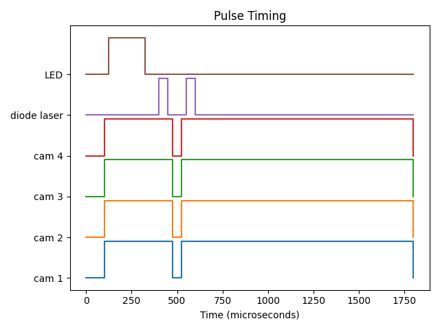

OpenSync - Open source, Open hardware Synchronizer for PIV#
OpenSync is a simple and low-cost synchronizer based on microcontroller technology. It provides eight (8) independent output channels and two (2) channels for accurate and precise control of laboratory equipment. With a timing resolution of four nanosecond, it provides enough flexibility for most users’ needs when performing a PIV experiment on stringent funding. Due to the microcontroller-based platform used in this design, OpenSync devices remain remarkably cost effective for deterministic control of laboratory equipment.
Learn why OpenSync exists and explore the hardware, firmware, and software.
Look up Python functions, SCPI commands, and device parameter definitions.
Explore the future collection of real experiments using OpenSync.
Find the future standalone PDF reference for device operation and parameters.
The device at a glance#
System frequency |
250 MHz (4 ns timing resolution) |
Output channels |
Eight independently programmable channels |
Input channels |
Two: external trigger and gate |
I/O logic levels |
3.3 V or 5 V at high impedance |
OpenSync is a low-cost digital delay/pulse generator with each output channel owning its own timing sequence. The internal rate timer, external trigger, and gate inputs support synchronization across an experiment. OpenSync focuses on the timing needs of typical PIV measurements; it does not provide sub-cycle timing or every feature of a commercial FPGA-based generator.

An example of coordinated timing for a diode-laser experiment.#
Acknowledgments#
OpenSync thanks Dr. Ivan Nepomnyashchikh and Professor Alex Liberzon for spearheading open source, open hardware equipment for the OpenPIV project. The original OpenPIV discussion helped initiate this project. Relatively low-cost systems from Optolution and MicroVec Pte Ltd also provided inspiration very strong inspiration to complete this project.